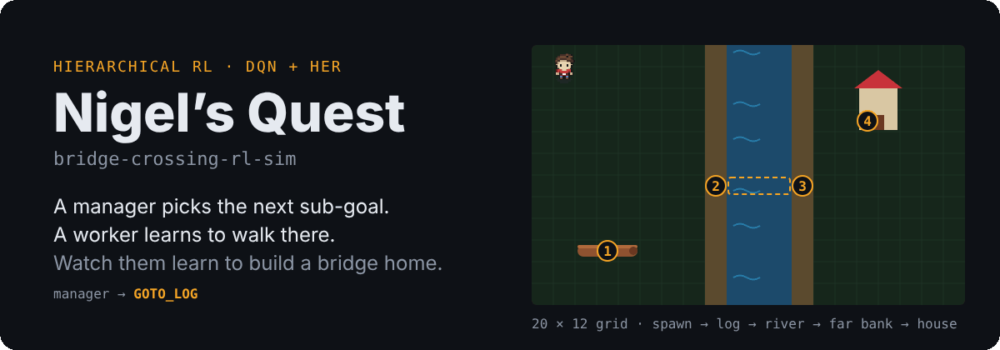
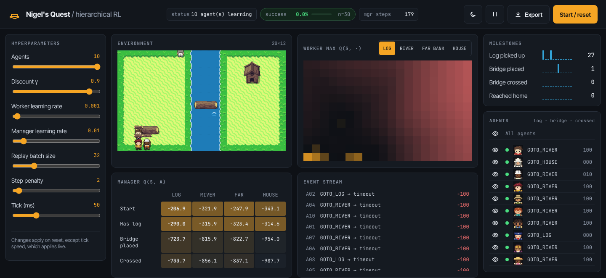
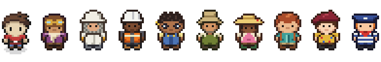

Manager
DQN · plans- Sees
- has logbridge placedcrossedlast goal failed
- Picks
- One of four sub-goals: log, river, far bank, house.
- Paid for
- +100 if its sub-goal produced the milestone it asked for, −100 if it didn't.
Hierarchical reinforcement learning · Django · PyTorch
Nigel has to pick up a log, lay it across a river, cross, and walk into his house. A manager network decides which of those steps to try next. A worker network learns how to walk wherever the manager points. Training runs on the server, and the browser shows every move as it happens.

01 · The task
Reaching the house only counts once the bridge is built and crossed, and walking into the river ends the episode. A flat agent wandering at random almost never stumbles onto the whole sequence, so it almost never sees a reward to learn from. Splitting the problem in two is what makes it learnable.
engine.py, one square per tile. The bridge spans the three water tiles once it's placed.GOTO_LOGWalk onto the log's centre tile at (3, 9). Milestone: has log.
GOTO_RIVERCarry it to the near bank at (8, 6). Milestone: bridge placed.
GOTO_FAR_BANKWalk over the bridge to (12, 6). Step on water anywhere else and Nigel drowns. Milestone: crossed.
GOTO_HOUSEAny tile of the house counts. Episode over, success.
02 · How it works
Both are small deep Q-networks, but they see different things, choose different kinds of actions, and are paid for different things. The manager issues a sub-goal, the worker gets up to 75 steps to reach it, and when that attempt ends the manager picks the next one.
Because the goal coordinate is part of its input, one worker network learns to reach any tile. It never has to understand logs or bridges; that's the manager's job.
Without the last goal failed flag, every decision looks like a first attempt. With it, the manager can learn to retry a correct plan after a clumsy worker run instead of abandoning it.
Epsilon decays separately for each manager state and each worker goal, so a stage the agents rarely reach isn't stuck with exploration already worn down by earlier ones.
03 · Rewards
Hierarchical agents have a well-known failure mode: train two separate value estimators toward one shared goal, and a run of worker mistakes can drag the manager's estimates far from a plan that was already right. The margin for error is thin.
Nigel's Quest avoids this by decoupling the rewards completely. The manager is graded on whether its choice moved the task forward. The worker is graded on whether it followed orders, good orders or not.
The worker deliberately gets no share of the task milestones. Each milestone fires on the same tile as the goal that asks for it, so paying it to the worker would only duplicate its goal bonus, make some goals worth far more than others inside one shared network, and credit milestones hit by accident under a goal that didn't ask for them.
A sub-goal ends the moment any milestone fires. Walking over the log while sent to the river counts as a manager failure, and the manager re-plans from the new state.
| Event | Manager | Worker |
|---|---|---|
| Sub-goal produced its milestone | +100 | — |
| Sub-goal failed or timed out | −100 | — |
| Reached the assigned tile | — | +100 |
| Each step | — | −step penalty |
| Rarely visited tile | — | +novelty |
| Drowned | — | −200, episode ends |
| Task milestones themselves | via sub-goal | 0 |
Hindsight experience replay
When an attempt ends short of its goal, the attempt is stored twice: once as the failure it was, and once relabelled as if the tile it ended on had been the goal all along. That second copy is a success, so the worker learns to reach somewhere from every attempt, which is exactly the skill a goal-conditioned network needs.
04 · Watch it learn
The dashboard is built for seeing why a run is stuck, not just that it is. This is a real ten-agent run, 90 seconds in: the log has been picked up 27 times and a bridge placed once, but nobody has crossed yet.

Up to ten agents share the same map, each with its own world and the same two networks.
A heatmap of how valuable the worker thinks each tile is, for each of the four goals.
The manager's value for every sub-goal at every stage of the task.
Which sub-goal the manager prefers from each state. Feedback loops show where it gets stuck.
How often each step is reached, and why every sub-goal ended.
Agents, discount, learning rates, batch size and step penalty apply on reset; tick speed applies live.
Download a versioned JSON run report, or the raw network weights.
05 · Under the hood
| Manager | Worker | |
|---|---|---|
| Input | 4 flags | 7 values: x, y, 3 flags, goal x, goal y |
| Network | MLP 64 → 64, ReLU, Adam, MSE on bootstrapped TD targets, grad-norm clip 1.0 | |
| Output | Q for 4 sub-goals | Q for 4 moves |
| Replay buffer | 10,000 | 20,000, plus hindsight relabels |
| Target network | Synced every 500 training steps | |
| Exploration | ε per manager state | ε per goal |
| Default learning rate | 0.01 | 0.001 |
The browser polls /simulation/api/state/ from a Web Worker, and each poll advances every world by one tick. PyTorch is pinned to a single thread: at this size, coordinating threads costs more than the matrix multiplications themselves.
06 · Run it
git clone https://github.com/miles-howell/bridge-crossing-rl-sim.git
cd bridge-crossing-rl-sim
python -m venv venv && source venv/bin/activate
pip install -r requirements.txt
cp .env.example .env
python manage.py migrate
python manage.py runserverThen open 127.0.0.1:8000/simulation/ and press Start / reset.
SECRET_KEY in .env is required. Any non-empty string works locally.migrate creates the SQLite session table the simulation needs./simulation/ prefix; the root URL is a 404.python manage.py test.The cast

World tiles and Nigel are from ArMM1998's free Zelda-like spritepack on OpenGameArt. The other nine are generated from text pixel grids by tools/sprites/.